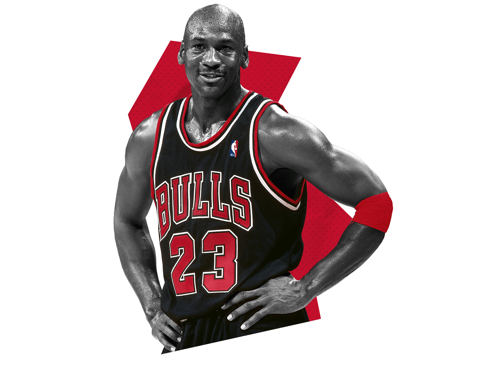

The shooting guard (SG), also known as the two, two guard or off guard,[1] is one of the five traditional positions in a regulated basketball game. A shooting guard's main objective is to score points for their team and steal the ball on defense. Some teams ask their shooting guards to bring up the ball as well; these players are known colloquially as combo guards. A player who can switch between playing shooting guard and small forward is known as a swingman. In the NBA, shooting guards usually range from 6' 2" (1.88 m) to 6' 6” (1.98 m) while in the WNBA, shooting guards tend to be between 5' 10" (1.78 m) to 6' 1" (1.85 m).
The Basketball Handbook by Lee Rose describes a shooting guard as a player whose primary role is to score points. As the name suggests, most shooting guards are good long-range shooters, typically averaging 35–40 percent from three-point range. Many shooting guards are also strong and athletic, and have the ability to get inside the paint and drive to the basket.
Some of the most famous shooting guards to ever play are:
Shooting guards generally are well-versed scorers. They should be able to: